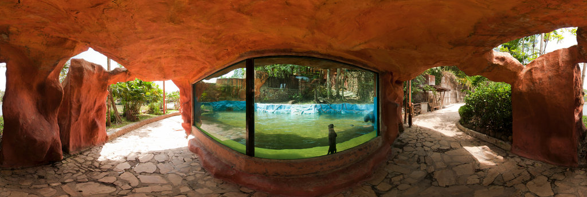

OTTERS
European otter
In the British Isles, they were common as recently as the 1950s, but became rare in many areas due to the use of chlorinated hydrocarbon pesticides, habitat loss and water pollution.
North American river otter
River otters eat a variety of fish and shellfish, as well as small land mammals and birds. They grow to one meter (3 to 4 ft) in length and weigh from five to 15 kilograms (10 to 30 lb). In some areas, this is a protected species, and some places have otter sanctuaries that help sick and injured otters to recover.
Sea otter
Their historic range included shallow waters of the Bering Strait and Kamchatka, and as far south as Japan. Sea otters have about 26,000 to 165,000 hairs per square centimeters of skin,[14] a rich fur for which humans hunted them almost to extinction. By the time the 1911 Fur Seal Treaty gave them protection, so few sea otters remained that the fur trade had become unprofitable.
Giant otter
This gregarious animal grows to a length of up to 1.8 m (5.9 ft), and is more aquatic than most other otters.